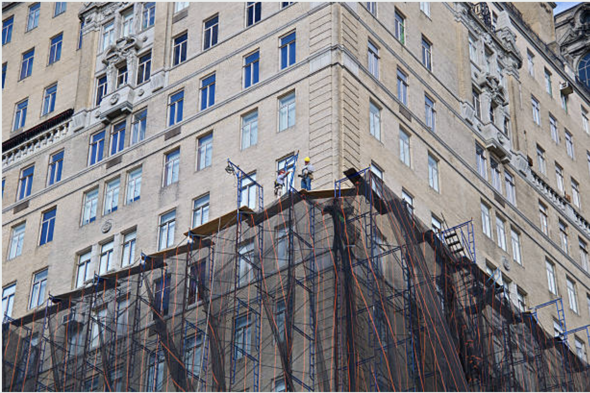
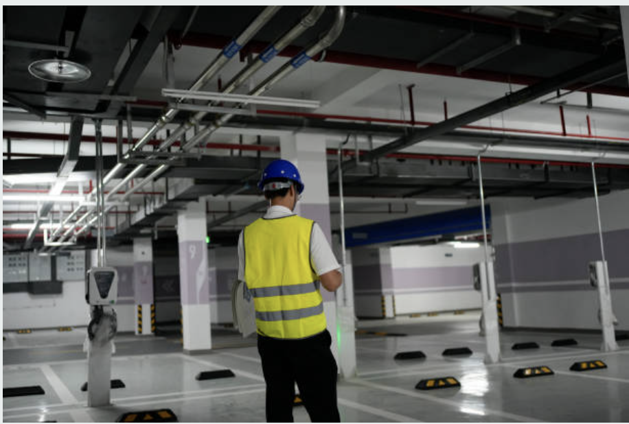
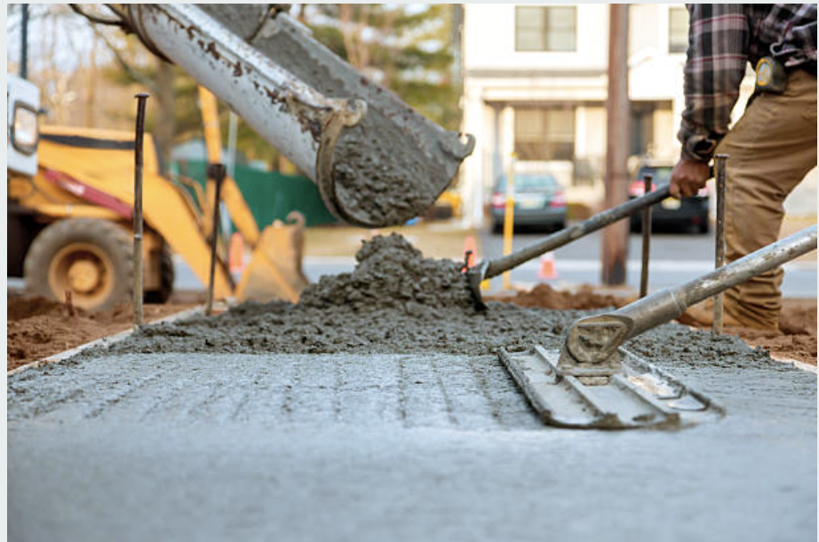
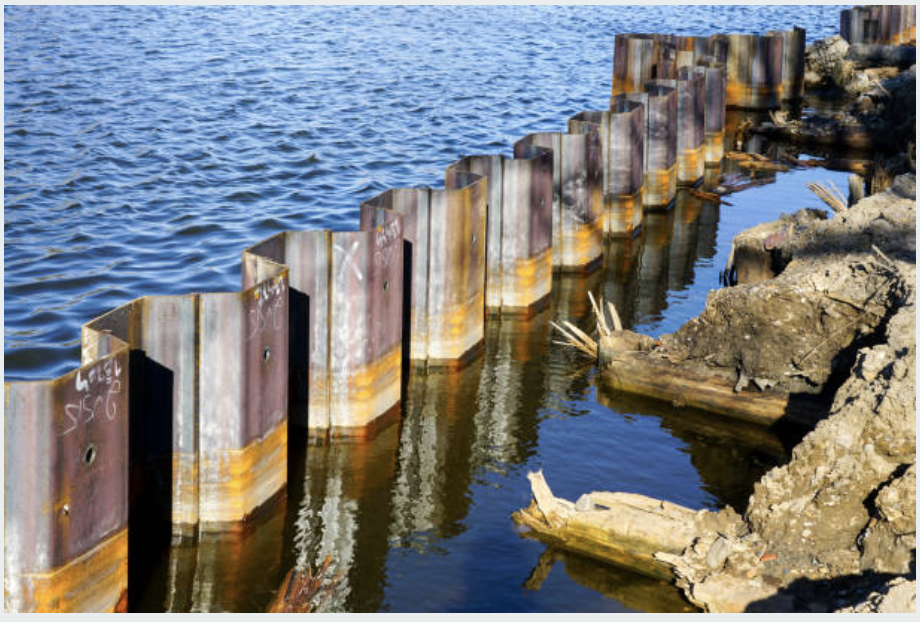
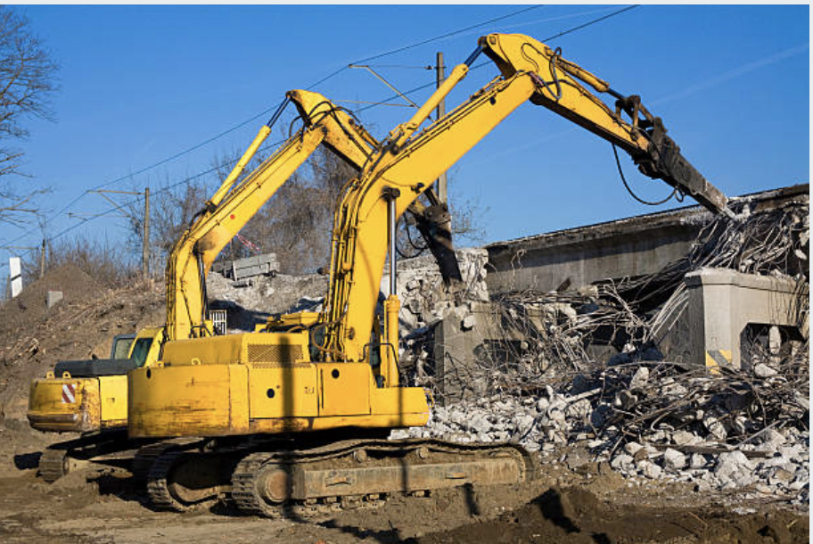
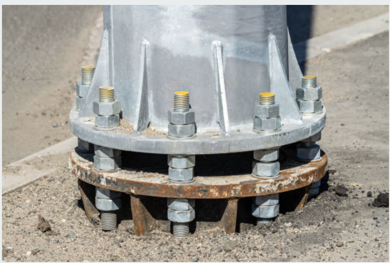
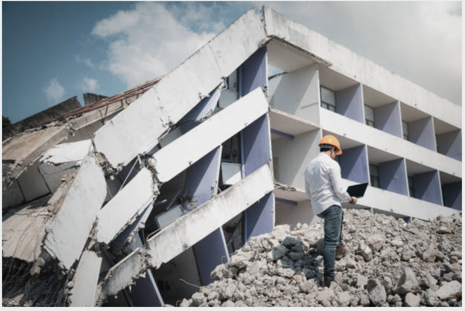
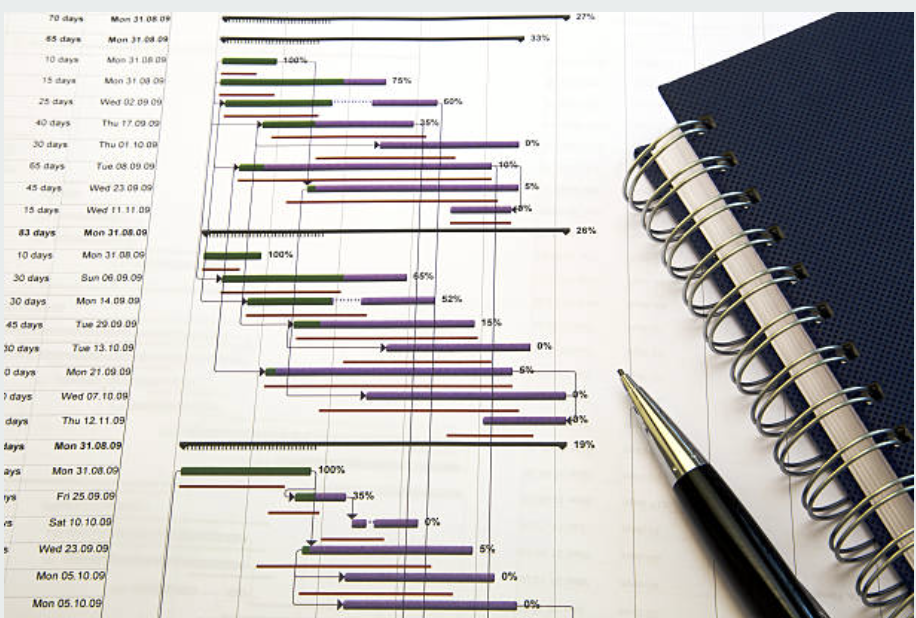

Structural Renovation
Repair, renovation, addition, opening, steel and concrete fixes, and masonry rehab.

Ontario Codes, Inspections & Structural Engineering
Asvakas supports permit-driven structural work, existing-building assessments, envelope rehabilitation, parking structures, temporary works, and forensic investigations across Ontario and Canada.
From OBC permit documents and field review to facade restoration, parking garage assessment, temporary works, and forensic reporting, our Canada team is structured around real Ontario project needs.
Structural Engineering
Repair, renovation, addition, opening, steel and concrete fixes, and masonry rehab.

Permit-ready structural design for steel, concrete, timber, masonry, and mixed systems under OBC, NBC, and CSA standards.

Peer review, PEO General Review, field observations, consultant coordination, and condition-based engineering advice.

OBC Compliance Inspections
OBC Part 11 existing building inspections, condition assessment, and building permit filing.

Structural condition surveys, repair planning, and permit documentation for parking structures.

Sidewalk inspection, restoration, and repair with safe and code-compliant pedestrian solutions.

Temporary Works Engineering
Detailed erection staging, sequencing, and structural support design for buildings and bridges.
Temporary works engineering for watercourse rerouting, cofferdam design and stabilization.

Safe, code-compliant bridge dismantling with detailed demolition methodology and logistics.

Specialty Engineering
Roof dunnage, safety railings, parapets, bulkhead renovation, and roof system repair.

Design of concrete anchors, steel/wood connections, brick masonry anchorage systems.

Slab formwork, sidewalk overhead protection, and renovation formwork engineering.

Forensic Engineering
On-site investigation of structural distress, collapse, or unexpected movement to determine root cause.

Detailed technical analysis of structural failures for insurance claims, legal proceedings, and code compliance disputes.

Professional engineering testimony and expert witness services for construction litigation and arbitration proceedings.

Construction Services
Accurate quantity takeoffs and cost projections for structural scopes, helping owners and contractors budget with confidence.
Comprehensive construction schedules and critical path analysis to keep complex structural projects on track from start to finish.

On-site engineering oversight and shop drawing review throughout construction to ensure structural compliance.

We work at the intersection of code compliance, constructability, and existing-building reality — helping projects move from assessment to permit to site completion.
Strong permit packages, clear scopes, and technically grounded designs for Ontario municipalities and review teams.
Reports, permit responses, and engineering deliverables managed around construction and municipal deadlines.
Every recommendation is shaped by OBC, CSA standards, OHSA obligations, and occupant/public safety.
We focus on practical solutions for aging buildings, phased repairs, and tight urban sites.
Representative work across facade renewal, mixed-use design, retrofit, and code-driven rehabilitation.

A practical sequence built around assessment, approvals, and construction support.
01/03→
We review existing conditions, risks, and municipal triggers so the engineering scope matches the real building and approval path.
02/03→
We prepare calculations, drawings, and code responses aligned with OBC, municipal review comments, and contractor coordination.
03/03→
We stay involved through field review, deficiency follow-up, shop drawing review, and closeout documentation.
Feedback from owners, boards, developers, and contractors who needed practical Ontario engineering support.
Explore practical articles on OBC compliance, facade and balcony reviews, bridge works, temporary structures, heritage rehabilitation, and forensic engineering in Canadian conditions.